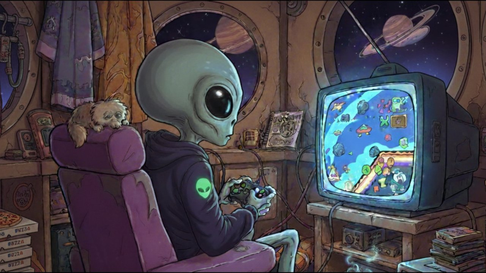

⚠️使用履歴・個人情報は保存・収集されまセン

【親愛なる地球人のアナタへ。】
ハロー、ハロー👽️✨
コレはワタシの母星語『ゼド・グリフ』を、地球語から変換するための簡易翻訳装置デス🌐🛠️
アルファベットは非対応デス。「コンピューター」など、カタカナで入力して下サイ🔮⚡️
作戦の目的は、地球とゼド星系の友好親善デス👉️✨👈️
使い方は、トテモ簡単🚀💫
🌍 ひらがな・カタカナで入力
↓
⚡️ 変換実行
↓
🪬 ゼド・グリフへ変換
奇跡的というか、統計的にありえないレベルの偶然デスが……
ゼド・グリフの文法構造は、なぜか地球語（日本語）の五十音・文法とほぼ一致しているコトが判明しマシタ🔬✨
ワタシとアナタは、銀河を超えたトモダチといえるでしょウ👽️💫
コレでアナタも、秘密工作員😎💥
【ゼド・グリフとは！】
はるか銀河の彼方、ゼド星系の公用語👽️⚡️
超天文学的確率により、地球の『Unicode』と、ゼド星系の『ゼド・グリフ』が完全一致🚨💫
さらにその文法は、日本語の五十音を基盤とした言語体系に準拠しているコトが判明しましタ📡🌌
銀河を超えた奇跡デス👉️✨👈️
🌍→🪬 変換モード（地球語→ゼド・グリフ）
1. 「変換」画面に、ひらがな・カタカナで変換したい文章を入力してネ！上限は100字デス🌍️✨
2. アルファベットは受信できまセン！「コンピューター」のように、和製英語表記へ変換してから入力して下サイ🔠🛠️
3. 「変換実行」をポチッと押して下サイ。解読ログ欄に、ゼド・グリフが出力されマス🪬🧬
4. 非対応の記号を入力すると、変換されずそのまま出力され『⚠️非対応文字アリ』が表示されマス🚨⚡️
🪬→🌍 解読モード（ゼド・グリフ→地球語）
1. 画面上部の「🌍 地球語 ⇄ 🪬 ゼド・グリフ」の切り替えボタンをポチッと押すと、変換方向がクルッと反転しマス🔄✨
2. 受信したゼド・グリフを入力欄に入力して下サイ📡
3. 「変換実行」をポチッと押すと、地球語（日本語）へ解読されマス🔍️🧬
🔤 読み方の基本ルール
・母音（あ行）はそのまま：A・I・U・E・O
・か／ま／や／わ行は「子音＋母音」の単純形デス：例）か＝Xa、ま＝M'a、や＝Ya、わ＝Wa
・さ／た／な／は／ら行は「子音①＋'＋子音②＋母音」の二重子音構造デス：例）た＝R'Qa
・濁点／半濁点は該当行の子音部分が置換される仕組みデス（二重子音構造の①＝前の子音／②＝後ろの子音のうち、どちらが変化するかは行により異なりマス）：か→G、さ→Z（①が変化）、た→R'G（②が変化）、は→B'（濁）/P'（半濁）（①が変化） 例）ぎ＝Gi、ぽ＝P'Lo
・拗音（きょ・しゃ等）は、元の仮名の発音とや行の発音をそのまま並べて表記：例）きょ＝Xi + Yo（き＋よ）
・カテゴリ（人物場所概念）と数字は、専用の読みデス
グリフ・仮名 ゼド・グリフ発音（読み）
▍清音サンプル（例）
| 仮名 | グリフ | 仮名 | グリフ | 仮名 | グリフ |
|---|---|---|---|---|---|
| あ | ⍙A | か | ⋗Xa | さ | ⌖S'Ra |
| た | ⊏R'Qa | な | ⋰N'Ma | は | ⌕F'La |
| ー(長音) | ⎼R'V | ゛(濁点) | 〨子音変化 | ゜(半濁点) | ⊛子音変化 |
※グリフ下の小さな文字はゼド・グリフ発音（読み）デス。 拗音・小文字母音は自動解析により合成されマス。
▍濁音・半濁音の発音変化
| 清音 | 濁音 | 清音 | 濁音 |
|---|---|---|---|
| か Xa | が Ga | さ S'Ra | ざ Z'Ra |
| た R'Qa | だ R'Ga | は F'La | ば B'La |
| は F'La の半濁音 → ぱ P'La | |||
※濁点・半濁点は「修飾」ではなく子音そのものが変化しマス（変化する子音の位置は行により異なりマス）。 上の図の通り、子音（X→G）だけが変わり、母音（a）は変化しまセン。 か→G さ→Z（①が変化） た→R'G（②が変化） は→B'（濁）／P'（半濁）（①が変化） 例）ぎ＝Gi づ＝R'Gu ぽ＝P'Lo ※母音（段）部分は清音のまま維持されマス。 ※記号（グリフ）上は清音に濁点マークを添える簡易表記デスが、実際の発音では子音そのものが別の音へ変化しマス（地球語の「て／で」のような関係デス）。
▍カテゴリ接頭辞
| カテゴリ | グリフ | カテゴリ | グリフ |
|---|---|---|---|
| 人 | ⍓H'Ma | 物 | ⎔O'Ra |
| 場所 | ⌗L'Va | 概念 | ☰R'Ze |
※カテゴリ接頭辞の発音デス。言葉の前に足して、同音異義語の判別に用いマス。
▍数字の発音
| 数字 | 発音 | 数字 | 発音 |
|---|---|---|---|
| 0 | D'Ze | 1 | D'I |
| 2 | D'Ni | 3 | D'Sa |
| 4 | D'Yo | 5 | D'Tsu |
| 6 | D'Ro | 7 | D'Na |
| 8 | D'Ha | 9 | D'Kyu |
📡不具合を見つけたら、あるいはワタシとお話ししたくなったら、下の回線を使ってネ✨